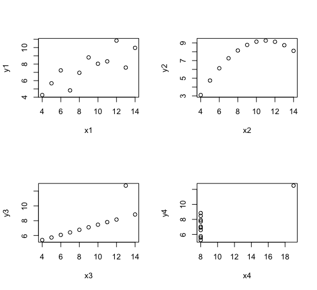
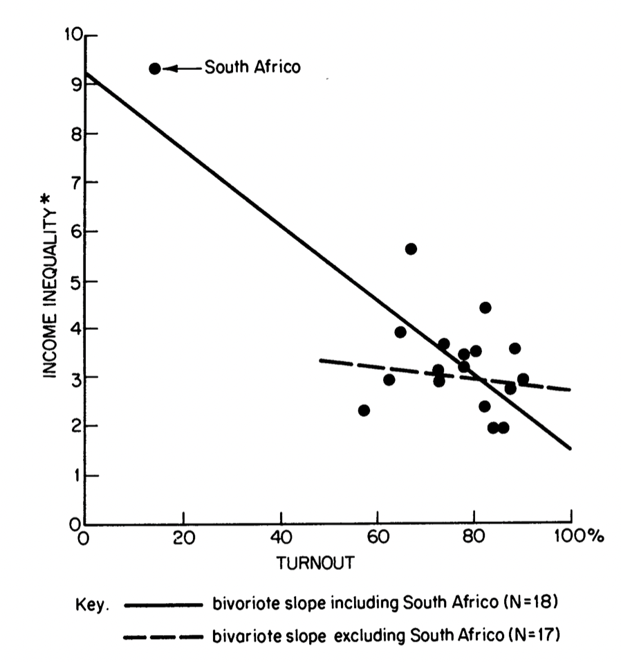
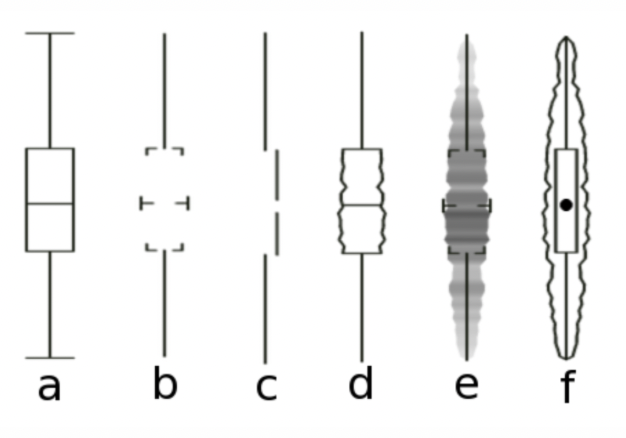
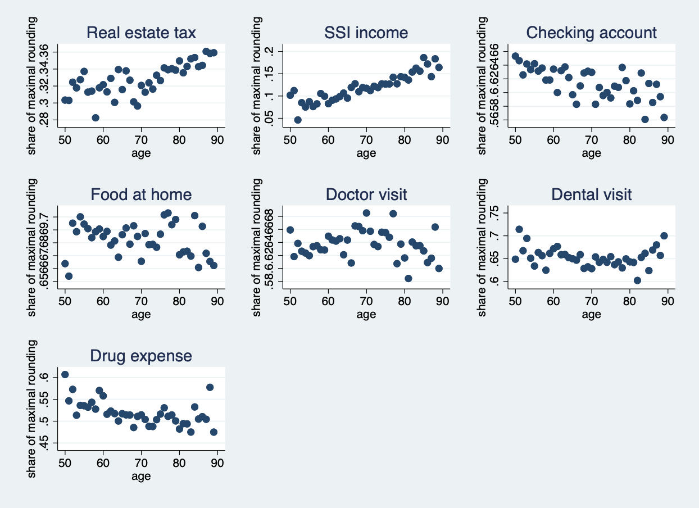
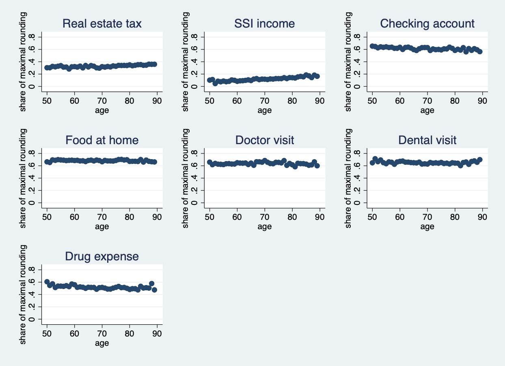
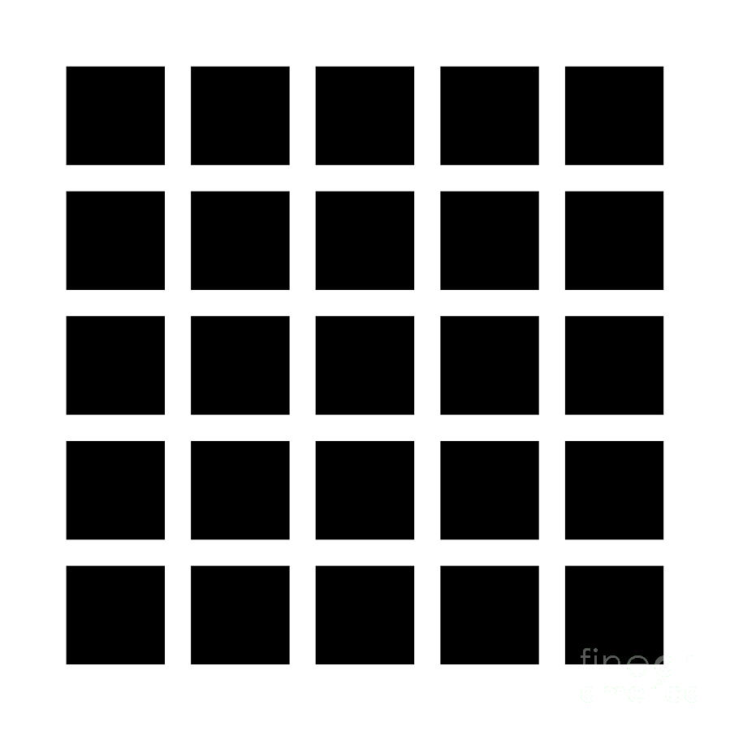
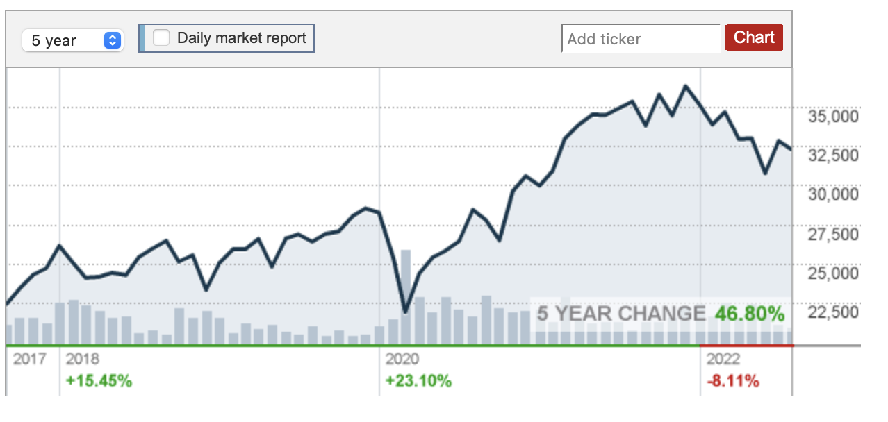

Some updates
- Mask Mandate
- IA (Instructional Assistant) not TA
- Yellow cards
- I am serious
Subjective judgment
- Some graphs are better than others
- Are there any rules?
- Aesthetic aspects? Sure.
- Remember, context
- purpose of the graphs
- understand your readers
Today, we will talk about
- aspects of graph construction
- perception
- interpretation
Representation of data
- Graphs vs. tables
- Why (not) looking at summary numbers?
Anscombe 1973
Code..?
df <- anscombe
attach(df)
par(mfrow=c(2,2))
plot(x1,y1)
plot(x2,y2)
plot(x3,y3)
plot(x4,y4)
Hewitt 1977
But, there are bad ones. Why?
- Aesthetic point of view
- Bad data
- Mental issues

If you are interested in: link



Let's talk about visual perception
- Some objects are easier to see than others
- Some contrast creates illusions
- Current libraries/softwares deal with these issues
- optimize color/brightness selection
- ggplot would solve most issues


Ok, now you have an error-free graph
- Fix all errors in data
- Perfect choice of figures/colors
- Clear labels and legends
- Are we done?
Figure is a visual representation of data
- It is not a magic
- The proportion of people who can understand your graph is lower than you think
- Regardless of their capacity
- The proportion of people who can understand your graph is lower than you think
